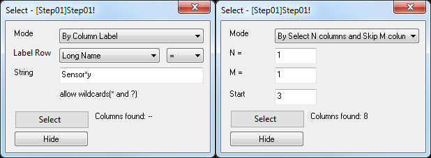

FAQ-783 Kann ich Arbeitsblattspalten nach Beschriftung oder Index auswählen und verbergen?
Select_Column_by_Label_or_Index
Letztes Update: 20.10.2022
Sie können im aktiven Arbeitsblatt Spalten nach Spaltenbeschriftung oder Spaltenindex auswählen (und optional verbergen):
- Klicken Sie auf Bearbeiten: Auswählen oder Spalte: Spalten auswählen, um einen Dialog zu öffnen, in dem Sie Folgendes festlegen können:
- Auswahlmodus
- Auswahlzeichenkette und -bedingung, wenn Sie nach Beschriftung auswählen, oder Spalten zum Auswählen und Überspringen ab der Anfangsspalte, wenn Sie nach Index auswählen
- 
- Klicken Sie auf die Schaltfläche Auswählen, um die Spalten auszuwählen, die Ihre Auswahlkriterien erfüllen.
- Optional können Sie die ausgewählten Spalten verbergen. Um die Spalten wieder anzuzeigen, wählen Sie Bearbeiten: Rückgängig oder Sie markieren das gesamte Arbeitsblatt, klicken dann mit der rechten Maustaste und wählen Spalten verbergen/anzeigen: Anzeigen.
Schlüsselwörter:Beschriftungszeilen, Arbeitsblatt, Datenauswahl, überspringen, verbergen, anzeigen